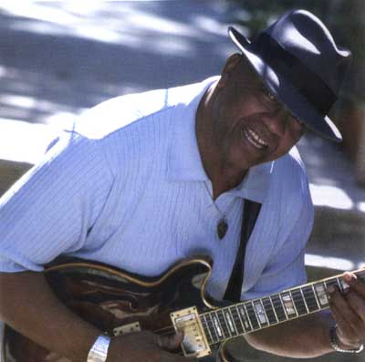

W.C.Clark

«Все лучшее, что есть в современном техасском блюзе. Медово-сладкая
и успокаивающая, ослепительная и обжигающая музыка. Как вокалист он вне
конкуренции».
Blues Revue
«Кларк может сыграть все: от старого доброго рок-н-ролла и жесткого
ритм-энд-блюза до мемфисского соула, музыки фанк и современного блюза».
Living Blues
«Крестный Отец» остинского блюза У. К. Кларк выиграл награду W.C. Blues Handy Award в номинации «Лучшая блюзовая песня 2003 года» за композицию "Let It Rain" с альбома FROM AUSTIN WITH SOUL. Эта самая престижная в блюзовом мире премия, стала третьей в карьере Кларка.
Кроме этого Уэсли Кларк стал обладателем четырех номинаций W.C. Handy
Award:
«Лучший блюзовый альбом года» - FROM AUSTIN WITH SOUL
«Лучший артист года среди мужчин»
«Лучший соул альбом года» - FROM AUSTIN WITH SOUL
«Лучшая песня года» - "Let It Rain"
Премия «Лучший блюзовый инструменталист 2003 года» присуждена группе Roomful of Blues. Премия также стала третьей в карьере группы.
«Если блюз играется правильно, он делает вашу душу чище»
У. К. Кларк, Остин, штат Техас
Так и есть, Уэсли К. Кларк, мастер гитары и вокала, известный как «Крестный Отец Остинского Блюза», «правильно играет блюз» и «очищает души» как в своем родном Ист-Сайде Остина, так и на концертных площадках по всему миру вот уже более сорока лет. Он - наставник огромного числа молодых исполнителей блюза и соула, он все эти годы передает им то лучшее, что есть в музыке. Звезды блюза от Стиви Рэя и Джимми Вогана до Анжелы Стрели, Лоу Энн Бартон и Маршии Болл совершенствовали свое мастерство под руководством Кларка. То сочетание современного техасского блюза, обжигающей гитары и трогающего сердце соул-вокала в «мемфисском» стиле, которое воплощено в музыке Кларка, сделали этого исполнителя равно любимым среди фэнов блюза и ритм-энд-блюза. Газета The Houston Chronicle назвала его «одним из самых проникновенных музыкантов Остина:Он сильный и проницательный соул-мен, обладающий непреходящей мудростью».
До того, как Уэсли Кларк начал выпускать собственные альбомы, (первый, изданный самим артистом в 1986 году, три на ныне не существующем лейбле Black Top и последний на Alligator Rec.) местная пресса часто называла его «самым ревностно-хранимым секретом Остина». Но обрушившиеся на артиста бешеная популярность у публики и масс-медиа, все более интенсивные турне, набирающие обороты год от года, раскрыли, наконец, этот секрет. В альбоме From Austin With Soul, его дебюте на Alligator Records, блюз Кларка, насквозь пропитанный музыкой соул, достигает высот, о которых раньше можно было лишь догадываться. Кларк написал 5 из 13-ти песен альбома (Bitchy Men, Let It Rain, Got To Find A Lover, I'm Gonna Disappear, I Keep Hanging On), а так же включил в него прекрасную подборку номеров, таких как Snatching It Black Кларенса Картера, Midnight Hour Blues Гейтмауса Брауна, Got Me Where You Want Me Бобби "Blue" Блэнда, Get Out Of My Life, Woman Альберта Кинга и Real Life Livin' Hurtin' Man Джонни Адамса. Композиция Don't Mess Up A Good Thing, эмоциональный дуэт Кларка со своей бывшей ученицей, а в настоящее время коллегой по записи Маршией Болл, это только одна из многих жемчужин альбома. Этот релиз, продюсером которого стал Марк "Kaz" Казанофф, записан на Arlyn Studios Остина; на нем представлено настоящее созвездие лучших музыкантов техасской столицы, включая басиста Ларри Фалчера, барабанщика Фрости Смита, гитаристов Дерека О'Брайена и Пэта Бойака, клавишников Рили Осборна и Грея Грегсона, а так же самого Марка Казанофф, зажигательно играющего на духовых.
Уэсли Кёрли Кларк родился в Остине, Техас, в 1939 году в семье музыкантов. Его отец играл на гитаре, а бабушка, мать и сестры пели в церковном евангельском хоре. «В моей душе было столько музыки», - вспоминает Кларк - «что мне достаточно было просто взять в руки инструмент и начать играть». С детства он учился гитарной игре и в возрасте 16-ти лет получил свой первый ангажемент на выступление в Victory Grill, где был представлен легенде техасского блюза Т. Д. Беллу. Вскоре после этого Кларк, переключившийся на бас-гитару, стал участником группы Белла The Cadillacs. В начале шестидесятых началось его шестилетнее сотрудничество с группами Blues Boy Hubbard и The Jets в популярном остинском ночном клубе Charlie's Playhouse. Здесь он встречается с хитмейкером ритм-энд-блюза Джо Тексом, который «завербовал» его гитаристом на вакантное место в своей команде. Кларк отправился в долгое путешествие по американскому Югу, учась играть блюз, прежде всего у Текса, а так же у многих звезд соула и блюза, встретившихся ему на пути, а среди них были такие, как Тайрон Дэвис и Джеймс Браун. Звезды ритм-энд-блюза также научили Кларка по-настоящему «заводить» аудиторию.
Вернувшись в Остин, Кларк нашел его музыкальный ландшафт сильно изменившимся - появилось новое поколение молодых белых ребят, начавших активно посещать блюзовые клубы, чтобы научиться по-настоящему играть блюз. Будущие звезды, такие как братья Воган, Бил Кэмпбел, Пол Рей и Анжела Стрели приехали в Остин и здесь открыли для себя богатое музыкальное наследие и таких великолепных блюзменов, как У. К. Кларк.
В начале семидесятых Кларк собирает свою команду, Southern Feeling, в которую вошли певица Анжела Стрели и гитарист/пианист Денни Фриман. Он встретился и подружился со Стиви Реем Воганом, «огненным» гитаристом группы Джимми Вогана, и в последствии Стиви время от времени выступал с Southern Feeling. После того, как группа распалась, Кларк устроился работать механиком, однако Стиви, полный решимости заполучить Кларка в свою группу, неустанно соблазнял его вновь начать играть. В конце концов, Кларк ушел со своей работы и стал басистом Triple Threat Revue, где также играли Стиви, клавишник Майк Киндред, ударник Фредди Фэроу и певица Лоу Энн Бартон. Тогда же Кларк в соавторстве с Киндредом написали песню Cold Shot, ставшую одним из самых громких хитов Вогана, и принесшую недавно Кларку его первую «платиновую» пластинку.
В конце семидесятых Кларк покидает группу и формирует собственную, The W.C. Clark Blues Revue, с которой в 1986 году самостоятельно выпустил свой первый альбом, Something For Everybody. Группа была «завсегдатаем» концертных площадок Остина 80-х - начала 90-х годов, регулярно давая собственные концерты на таких легендарных сценах, как Antone's и открывая выступления супер-звезд, среди которых были Би Би Кинг, Джеймс Браун, Бобби "Blue" Блэнд и Альберт Кинг. Звезда Кларка - по крайней мере, в Техасе - начала свое восхождение. Журнал Austin American Statesman назвал его «самым эмоциональным блюзменом Остина».
Во время празднования 50-тилетия Кларка в 1989 году, он выступил перед «живой» аудиторией вместе со своими воспитанниками и последователями Стиви Реем Воганом, Джимми Воганом, Кимом Уилсоном, Лоу Энн Бартон, Анжелой Стрели и Уилом Секстоном. Это шоу (Austin City Limits), снятое PBS television, получило бурное одобрение критики и принесло Кларку общенациональную популярность.
В 1994 году друг Кларка "Kaz" Казанофф представил его Хэммонду Скотту, продюсеру Black Top Records. Глубоко впечатленный услышанным, Скотт в том же году выпустил альбом Heart Of Gold. За ним последовал Texas Soul (1996), вызвавший ураган эмоций равно как у критиков, так и у фанатов. «Медовый соул, самый классный блюз в «штате одинокой звезды», - приветствовала его Chicago Tribune. Кларк получал один восторженный отзыв за другим, а «радиус действия» его музыки постоянно расширялся, когда весной 1997 года на него обрушилась трагедия. Возвращаясь в Остин из турне Midwest, Кларк и его группа, разбились на своем микроавтобусе при выезде из Далласа. Погибли невеста Кларка и его барабанщик. Сам он отделался лишь легкими ушибами, но душевно был раздавлен. Однако в том же году артист нашел в себе силы вернуться на сцену и триумфально выступил на джазовом фестивале в Нью-Орлеане. Вскоре Кларк выиграл долгожданную для себя почетную премию W.C. Handy Blues Awards в номинации «Лучший блюзовый альбом года» за Texas Soul.
Его следующий релиз Lover's Plea (1998) показал, что Кларк поет и играет сильнее, чем когда-либо. На альбоме была представлена песня You Are Here, Are You There, написанная Кларком в память о своей невесте, погибшей в автокатастрофе. Lover's Plea принес ему еще одну награду W.C. Handy Blues Award, на этот раз в номинации «Артист, наиболее заслуживающий широкого признания». Еще одно телевизионное выступление (в рамках The Best Of Austin City Limits) стала хитом 1998 года, подготовив сцену для национального турне в поддержку альбома Lovers Plea. Критика снова была восторженной. Телевидение записало еще один концерт Кларка - его джем со Стиви Реем в рамках программы Stevie Ray Vaughan special.
Сейчас, с выходом альбома From Austin With Soul, Кларк поднимает свой блюз и соул к новым высотам. Музыкант, неустанно путешествовавший долгие годы, снова в дороге. Выступления, приуроченные к выходу From Austin With Soul, прошли во многих городах, в частности в Чикаго, на майском блюзовом фестивале 2002 года. У Кларка множество фэнов и друзей повсюду, и он продолжает завоевывать новых поклонников везде, где играет. Миру открылось то, что жители Остина знали на протяжении десятилетий: Уэсли Кларк, новатор и творец, чей эмоциональный вокал и мастерская, изящная гитарная игра передают душу Остина (From Austin With Soul) всему миру, всем, кто любит музыку.
Дискография
1987 Blues Revue
Drippin'
1994 Heart of Gold
Black Top
Heart of Gold - это впечатляющая демонстрация разносторонних талантов Кларка. Здесь маэстро может похвастаться своими фирменными «фишками», он доказывает, что ему подвластно почти все. Родина музыки Кларка - блюз пыльных придорожных закусочных Техаса, и, хотя в альбоме есть ряд чудесных номеров в этом стиле, музыкант не ограничивается техасским блюзом. В его исполнении звучит и жаркий соул - номера, среди которых чарующее и страстное прочтение "Let's Straighten It Out" Лэтимора. Они придают альбому не только разнообразие, но и глубину. Heart of Gold - это определенно релиз У. К. Кларка, первый альбом, содержащий по-настоящему ЕГО материал.
1995 Texas Soul
Black Top
Несмотря на то, что Кларк исполняет здесь несколько блюзовых номеров, этот CD по существу - ритм-энд-блюзовый и соул сейшн, где особая роль отводится спокойному, но эмоциональному вокалу Кларка (некоторые песни преисполнены философского смысла) и его жгучей гитаре. Квинтет Kamikaze Horns ограничивается исполнением проигрышей и рифов во время импровизаций солиста. Кларк, игра которого местами напоминает Рэя Чарльза и Би Би Кинга - искусный исполнитель со своеобразным творческим почерком. Этот CD рекомендуется всем поклонникам стакс-саунда шестидесятых.
1998 Lover's Plea
Black Top
Музыкальный старожил Остина У. К. Кларк является одновременно учителем и коллегой Стиви Рея Вогана, Маршии Болл и Лоу Энн Бартон. С ними и такими звездами как Крис Лэйтон из Double Trouble, Томми Шэннон, Сара Браун, Дерек О'Брайен и Марк Казанофф, Кларк развертывает перед нами свою широчайшею музыкальную палитру. Вокал Кларка ярок и выразителен, его гитара обжигает и пронзает слух. Песня "You Are Here, Are You There?", ода Кларка его погибшей невесте, а так же композиции "Pretty Little Mama", "Changing My Life With Your Love" и заключительная "That's a Good Idea" - настоящие жемчужины диска. Это наиболее продаваемый альбом музыканта на сегодняшний день.
2002 From Austin With Soul
Alligator
Несмотря на то, что диск записан на Alligator Records, чикагском «производителе» рок-н-ролльной музыки - этот альбом мог бы стать гордостью любого лейбла, такие пластинки выходили в «золотую эпоху» грамзаписи. Здесь Кларк сплетает воедино ритм-энд-блюз, госпел, фанк, бурлящий страстью мемфисский соул-блюз. Наслаждение, с каким Кларк играет эту музыку, слышно буквально в каждом треке. Его высекающая искры гитара все же отдает пальму первенства захватывающему, сногсшибательному вокалу. Кларк исповедуется в каждой фразе. Не будучи церковной, эта музыка религиозна в своей основе, сколько бы в ней не было от фанка и блюза. Песней "Real Live Livin' Hurtin' Man" Кларк вполне мог бы проповедовать с церковной кафедры, спасая людские души. Кларковские версии композиций Краренса Картера, Аллена Туссэйна, О. В. Райта и Оливера Сэйна вдыхают в эти произведения новую жизнь. Кларк спасает из небытия песню "How Long Is a Headache Suppose to Last?" малоизвестного соулмена Джимми Льюиса, и в его исполнении она звучит как классика, которую мы потеряли. Любой, кто испытал на себе воздействие From Austin With Soul, захочет еще раз услышать этого классного, великолепного соул и блюзмена.
ВЫДЕРЖКИ ИЗ ПРЕССЫ
«Кларк проникает в сердце и душу блюза. Его голос даже в записи звучит,
как на живом концерте, чистейшая гитара передает весь диапазон эмоций
блюза - от тлеющей страсти до слез.
Его тенор в доли секунды способен достичь той степени экзальтации, которая
просто не ведома большинству вокалистов. Кларк играет техасский блюз,
но он совсем не похож на бунтарей техасских «роудхаусов». Напротив, даже
монотонный иногда ритм он оживляет страстными импровизациями саксофона
и гитары. Музыка, которая продолжает пульсировать в сердце».
Burrells, Балтимор, (Lover's Plea Review)
«Своим вокалом он исповедуется, как Литтл Милтон и молится, как Тайрон
Дэвис. Мне все равно, что услышат другие - для меня он намного ближе к
«сущности соула», чем Шоун Маллинс».
Chicago Music Hub, Чикаго
«Блюзмен, с самого начала не лишенный стремления к громкому коммерческому
успеху, вплотную приблизился к достижению своей цели, записав "Cold Shot"
в соавторстве с гитаристом Реем Воганом.
Песня привлекла всеобщее внимание и послужила импульсом для присуждения
артисту премии W. C. Handy Award, упрочившей его статус музыканта, в чьей
игре великолепно сочетаются проникновенный соул, ритм и блюз».
Chicago Sun Times
«Карьера уроженца Остина, Уэсли Кларка, охватывает полвека, он - тот
человек, благодаря которому Остин стал одним из самых жарких музыкальных
очагов Америки. Кларк - влиятельный блюзмен; его стиль близок по духу
старой школе ритм-энд-блюза и соула.
Техасец Кларк так же прост в общении, как Би Би Кинг и Бобби "Blue" Блэнд.
Притом, что Кларк входит в касту лучших мировых блюзменов, он - простой
и искренний парень. Его выступление - редкая возможность для жителей Цинциннати
увидеть и услышать живую легенду».
Бен Хьюлетт, Цинциннати
«Голос Кларка звучал колоссально! Ему подвластно и полнозвучное пение
и сладкий фальцет. Так же свободно он владеет и гитарой, смело пускаясь
в рискованные импровизации.
Группа Кларка была достойна его самого, отыграв почти двухчасовой сет
с полной самоотдачей; паузы между песнями едва ли превышали 10 секунд.
Квартет, состоящий из вокала с гитарой, клавишных, бас гитары и ударных
«парил» над картой Америки, играя все, от чикагского и техасского классического
блюза до танцевального ритм-энд-блюзового свинга».
Роберт Михалек, Cincinnati Enquirer, Цинциннати
«Приятнейшим сюрпризом стало учреждение номинации «Артист, заслуживающий
широкого признания», победа в которой досталось «оплоту» остинского блюза
Уэсли Кларку».
Роб Фонтено, W. C. Handy Awards, Мемфис
«С релизом альбома Lover's Plea, он стал намного более востребован как
концертирующий исполнитель. Вне всякого сомнения, перед Кларком должен
открыться еще более широкий рынок. Пройдет совсем немного времени, и все
узнают, почему журнал "Downbeat" провозгласил его «американским классиком».
State Defender, Мемфис
«На титульном листе третьего диска Уэсли, изданного фирмой Black Top,
напечатано: «Настоящий техасский блюз». Да, здесь вы найдете немало той
истинно техасской музыки, что звучала и на предыдущих его альбомах. Все
двенадцать треков этого сета выдержаны в соул стиле Юга, разбавленном
зажигательным блюзом. Чудесная, разнообразная коллекция соула и блюза,
которая только упрочивает растущую репутацию Уэсли Кларка».
Рэй Эллис, Juke Blues Magazine (Lover's Plea Review)
«Самая сильная сторона Кларка - его вокал, динамичный, чистый, высокий.
Уэсли Кларк - талантливый, интересный артист».
The Bluesletter, Новая Зеландия
«Кто достоин занять вершину W. C. Handy Awards как лучший альбом года?
На этот вопрос вполне может дать У. Кларк, соулмен из Остина, штат Техас.
Ему подвластны упругие ритмы, проникнутые соулом и блюзом и вкрадчивый,
томный техасский «дрол». Человек, более двадцати лет назад оставивший
работу механика, чтобы стать участником группы Стиви Рэя Вогана, прошел
длинный путь, ни разу не изменив музыке соул и сохранив ее живую традицию».
Джеймс Рэйндл, Associated Press (Lover's Plea)
«Техасский гитарист/вокалист У. К. Кларк вновь и вновь доказывает, что
надо обладать подлинным духом соул и уметь с полной отдачей играть ритм-энд-блюз,
если вы хотите завоевать любовь публики. И его альбом Lover's Plea - яркое
тому свидетельство. Кларк - музыкант, способный контролировать каждый
штрих своего исполнения, но при этом в его музыке всегда чувствуется высокий
накал страстей».
Twin Cities Pulse, Миннеаполис (Lover's Plea)
«Что делает музыку Кларка отличительной, так это его необычайная способность
объединять различные стили в законченный, гармоничный продукт, а не просто
сваливать все в одну кучу в погоне за мнимым разнообразием. У Кларка есть
все - сказочный голос, «жесткая» техасская гитара, качественный оригинальный
материал и собственный неповторимый голос. Lover's Plea должен принести
ему еще большую популярность, чего он, несомненно, достоин».
Джим ДеКостер, Living Blues (Lover's Plea)
«Остинский гитарист и певец - соавтор суперхита "Cold Shot" Стиви Рея
Вогана - вырос в Техасе, но звучит так, будто он совершенствовал свое
мастерство в Мемфисе. Его прекрасный новый лонг-плей - это совершенная
комбинация жесткого блюза Штата Одинокой Звезды, ударного соула в стиле
Stax и вокала в традиции Роберта Клея и О. В. Райта, способного быть одновременно
упругим, терпким, резким и сладким как мед».
Chicago Tribune, Чикаго (Lover's Plea)
«Этой весной публика собралась в поддержку блюзмена У. К. Кларка, который
только что оправился после ужасной автомобильной аварии, унесшей жизни
его невесты и его ударника. Это было нелегким для всех напоминанием о
той страшной дани, которую может взыскать дорога, но мужество Кларка пред
лицом травм и потерь вдохновило каждого, кто общался с ним».
Джон Т. Дэвис, Austin American-Statesman
«Дело получается хорошо, когда вкладываешь в него душу» - говорит Кларк
о своей музыкальной философии. «И здесь не важно, играете ли вы на гитаре,
закатываете ли шары в лузу или забиваете в стену гвозди - не важно! Просто
бывают времена, когда легко быть в согласии со своей душой. Душа - это
истина: Я знаю, как волновать души людей и когда мне это удается, я счастлив.
Дело того стоит».
Тор Кристиансен, Dallas Morning News (Interview)